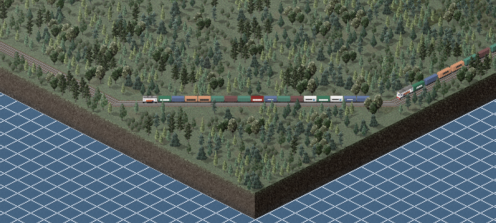
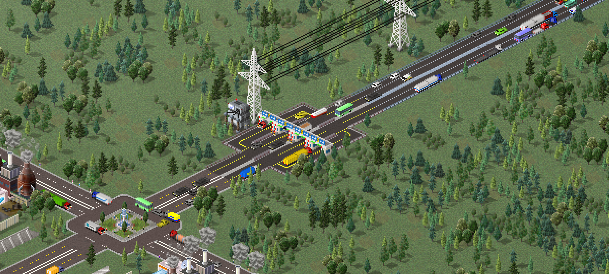
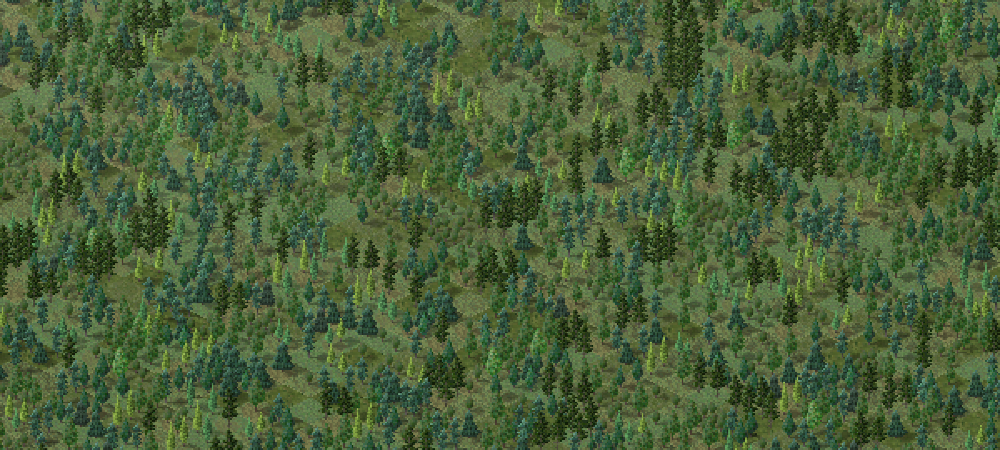
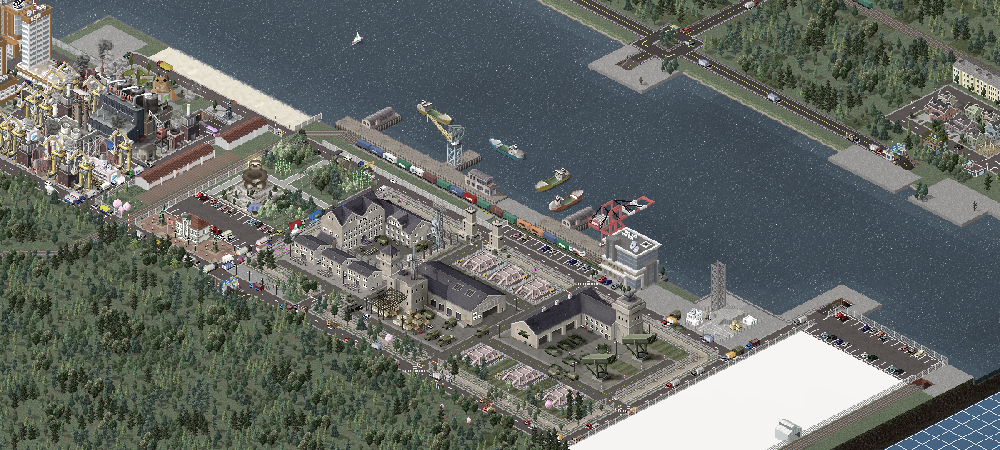
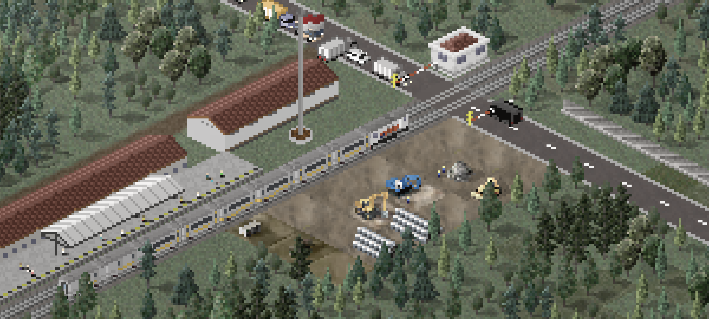

Adalah sebuah plugin transportasi yang bertemakan transportasi di negara Indonesia, mulai dari kereta api lengkap dengan infrastrukturnya,higga jalan tol.
Download

Adalah plugin yang menambahkan Variasi ke truk trailer, sebagian besar berisi trailer baru, mis. openwagon, Flatbed dan hopper tertutup.
Download

Nature + oleh Kiki012, theotheoderich, lobby divinus, dan tim cytopia Berisi 29 Flora Baru, 15 Dekorasi, 21 Tanah Baru, 7 Air Baru,dan 31 Dekal Baru.
Download

Plugin milik kiki012 lainnya.
Download

Cek respositori github saya untuk proyek lainnya.
Kunjungi